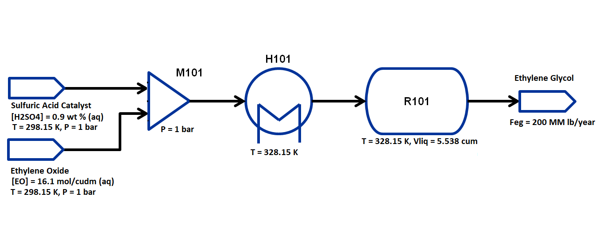

Flowsheet CSTR Simulation and Optimization of Ethylene Glycol Production¶
Learning outcomes¶
Call and implement the IDAES CSTR unit model
Construct a steady-state flowsheet using the IDAES unit model library
Connecting unit models in a flowsheet using Arcs
Fomulate and solve an optimization problem
Defining an objective function
Setting variable bounds
Adding additional constraints
Problem Statement¶
This example is adapted from Fogler, H.S., Elements of Chemical Reaction Engineering 5th ed., 2016, Prentice Hall, p. 157-160.
Ethylene glycol (EG) is a high-demand chemical, with billions of pounds produced every year for applications such as vehicle anti-freeze. EG may be readily obtained from the hydrolysis of ethylene oxide in the presence of a catalytic intermediate. In this example, an aqueous solution of ethylene oxide hydrolizes after mixing with an aqueous solution of sulfuric acid catalyst:
C2H4O + H2O + H2SO4 → C2H6O2 + H2SO4
This reaction often occurs by two mechanisms, as the catalyst may bind to either reactant before the final hydrolysis step; we will simplify the reaction to a single step for this example.
The flowsheet that we will be using for this module is shown below with the stream conditions. We will be processing ethylene oxide and catalyst solutions of fixed concentrations to produce 200 MM lb/year of EG. As shown in the flowsheet, the process consists of a mixer M101 for the two inlet streams, a heater H101 to preheat the feed to the reaction temperature, and a CSTR unit R101 with zero overall duty (external cooling required for the exothermic reaction). We will assume ideal solutions and thermodynamics for this flowsheet, as well as well-mixed liquid behavior (no vapor phase) in the reactor. The properties required for this module are available in the same directory:
egprod_ideal.py
egprod_reaction.py
The state variables chosen for the property package are molar flows of each component by phase in each stream, temperature of each stream and pressure of each stream. The components considered are: ethylene oxide, water, sulfuric acid and ethylene glycol and the process occurs in liquid phase only. Therefore, every stream has 4 flow variables, 1 temperature and 1 pressure variable.
Importing required Pyomo and IDAES components¶
To construct a flowsheet, we will need several components from the pyomo and idaes package. Let us first import the following components from Pyomo: - Constraint (to write constraints) - Var (to declare variables) - ConcreteModel (to create the concrete model object) - Expression (to evaluate values as a function of variables defined in the model) - Objective (to define an objective function for optimization) - TransformationFactory (to apply certain transformations) - Arc (to connect two unit models)
For further details on these components, please refer to the pyomo documentation: https://pyomo.readthedocs.io/en/latest/
From idaes, we will be needing the FlowsheetBlock and the following unit models: - Mixer - Heater - CSTR
We will also be needing some utility tools to put together the flowsheet and calculate the degrees of freedom, tools for model expressions and calling variable values, and built-in functions to define property packages, add unit containers to objects and define our initialization scheme.
from pyomo.environ import (Constraint,
exp,
Var,
ConcreteModel,
Expression,
Objective,
TransformationFactory,
value,
units as pyunits)
from pyomo.network import Arc
from idaes.core import FlowsheetBlock
from idaes.generic_models.properties.core.generic.generic_property import (
GenericParameterBlock)
from idaes.generic_models.properties.core.generic.generic_reaction import (
GenericReactionParameterBlock)
from idaes.generic_models.unit_models import (Mixer,
Heater,
CSTR)
from idaes.core.util.constants import Constants
from idaes.core.util import get_solver
from idaes.core.util.model_statistics import degrees_of_freedom
from idaes.core.util.initialization import propagate_state
import idaes.logger as idaeslog
WARNING: DEPRECATED: The
generic_models.properties.core.generic.generic_property has been moved to
idaes.models.properties.modular_properties.base.generic_property
(deprecated in 2.0.0.alpha0) (called from <frozen
importlib._bootstrap>:219)
WARNING: DEPRECATED: The
generic_models.properties.core.generic.generic_reaction has been moved to
idaes.models.properties.modular_properties.base.generic_reaction
(deprecated in 2.0.0.alpha0) (called from <frozen
importlib._bootstrap>:219)
WARNING: DEPRECATED: The generic_models.unit_models package has been moved to
idaes.models.unit_models (deprecated in 2.0.0.alpha0) (called from
<frozen importlib._bootstrap>:219)
WARNING: DEPRECATED: the 'get_solver' function has been moved to
'idaes.core.solvers.get_solver'. Please update your import. (deprecated
in 2.0.0.alpha0) (called from /tmp/ipykernel_8739/2270204972.py:22)
Importing required thermo and reaction package¶
The final set of imports are to import the thermo and reaction package. We have created a custom thermo package that support ideal vapor and liquid behavior for this system, and in this case we will restrict it to ideal liquid behavior only.
The reaction package here assumes Arrhenius kinetic behavior for the CSTR, for which \(k_0\) and \(E_a\) are known a priori (if unknown, they may be obtained using one of the parameter estimation tools within IDAES).
$ r = -kVC_{EO} $, $ k = k_0 e^{(-E_a/RT)}$, with the variables as follows:
These calculations are contained within the property, reaction and unit model packages, and do not need to be entered into the flowsheet. More information on property estimation may be found below:
Let us import the following modules from the same directory as this Jupyter notebook: - egprod_ideal as thermo_props - egprod_reaction as reaction_props
import egprod_ideal as thermo_props
import egprod_reaction as reaction_props
WARNING: DEPRECATED: The generic_models.properties.core.state_definitions
package has been moved to
idaes.models.properties.modular_properties.state_definitions (deprecated
in 2.0.0.alpha0) (called from <frozen importlib._bootstrap>:219)
WARNING: DEPRECATED: The generic_models.properties.core.eos.ideal has been
moved to idaes.models.properties.modular_properties.eos.ideal (deprecated
in 2.0.0.alpha0) (called from <frozen importlib._bootstrap>:219)
WARNING: DEPRECATED: The generic_models.properties.core.phase_equil package
has been moved to idaes.models.properties.modular_properties.phase_equil
(deprecated in 2.0.0.alpha0) (called from <frozen
importlib._bootstrap>:219)
WARNING: DEPRECATED: The generic_models.properties.core.phase_equil.forms has
been moved to idaes.models.properties.modular_properties.phase_equil.forms
(deprecated in 2.0.0.alpha0) (called from <frozen
importlib._bootstrap>:219)
WARNING: DEPRECATED: The generic_models.properties.core.pure package has been
moved to idaes.models.properties.modular_properties.pure (deprecated in
2.0.0.alpha0) (called from <frozen importlib._bootstrap>:219)
WARNING: DEPRECATED: The generic_models.properties.core.pure.Perrys has been
moved to idaes.models.properties.modular_properties.pure.Perrys
(deprecated in 2.0.0.alpha0) (called from <frozen
importlib._bootstrap>:219)
WARNING: DEPRECATED: The generic_models.properties.core.pure.RPP4 has been
moved to idaes.models.properties.modular_properties.pure.RPP4 (deprecated
in 2.0.0.alpha0) (called from <frozen importlib._bootstrap>:219)
WARNING: DEPRECATED: The generic_models.properties.core.pure.NIST has been
moved to idaes.models.properties.modular_properties.pure.NIST (deprecated
in 2.0.0.alpha0) (called from <frozen importlib._bootstrap>:219)
WARNING: DEPRECATED: The generic_models.properties.core.reactions.dh_rxn has
been moved to idaes.models.properties.modular_properties.reactions.dh_rxn
(deprecated in 2.0.0.alpha0) (called from <frozen
importlib._bootstrap>:219)
WARNING: DEPRECATED: The
generic_models.properties.core.reactions.rate_constant has been moved to
idaes.models.properties.modular_properties.reactions.rate_constant
(deprecated in 2.0.0.alpha0) (called from <frozen
importlib._bootstrap>:219)
WARNING: DEPRECATED: The generic_models.properties.core.reactions.rate_forms
has been moved to
idaes.models.properties.modular_properties.reactions.rate_forms
(deprecated in 2.0.0.alpha0) (called from <frozen
importlib._bootstrap>:219)
Constructing the Flowsheet¶
We have now imported all the components, unit models, and property modules we need to construct a flowsheet. Let us create a ConcreteModel and add the flowsheet block.
m = ConcreteModel()
m.fs = FlowsheetBlock(default={"dynamic": False})
We now need to add the property packages to the flowsheet. Unlike Module 1, where we only had a thermo property package, for this flowsheet we will also need to add a reaction property package. We will use the Generic Property and Generic Reaction Frameworks; more information may be found on these methods at https://idaes-pse.readthedocs.io/en/1.8.0/user_guide/components/property_package/index.html.
m.fs.thermo_params = GenericParameterBlock(default=thermo_props.config_dict)
m.fs.reaction_params = GenericReactionParameterBlock(default={"property_package": m.fs.thermo_params,
**reaction_props.config_dict})
Adding Unit Models¶
Let us start adding the unit models we have imported to the flowsheet.
Here, we are adding the Mixer (assigned a name M101) and a Heater
(assigned a name H101). Note that all unit models need to be given a
property package argument. In addition to that, there are several
arguments depending on the unit model, please refer to the documentation
for more details
(https://idaes-pse.readthedocs.io/en/latest/technical_specs/model_libraries/generic/unit_models/index.html).
For example, the Mixer unit model here is given a list consisting of
names to the two inlets.
m.fs.M101 = Mixer(default={"property_package": m.fs.thermo_params,
"inlet_list": ["reagent_feed", "catalyst_feed"]})
m.fs.H101 = Heater(default={"property_package": m.fs.thermo_params,
"has_pressure_change": False,
"has_phase_equilibrium": False})
m.fs.R101 = CSTR(
default={"property_package": m.fs.thermo_params,
"reaction_package": m.fs.reaction_params,
"has_heat_of_reaction": True,
"has_heat_transfer": True,
"has_pressure_change": False})
Connecting Unit Models using Arcs¶
We have now added all the unit models we need to the flowsheet. However,
we have not yet specifed how the units are to be connected. To do this,
we will be using the Arc which is a pyomo component that takes in
two arguments: source and destination. Let us connect the outlet
of the mixer(M101) to the inlet of the heater(H101), and the outlet of
the heater(H101) to the inlet of the reactor(R101).
m.fs.s03 = Arc(source=m.fs.M101.outlet, destination=m.fs.H101.inlet)
m.fs.s04 = Arc(source=m.fs.H101.outlet, destination=m.fs.R101.inlet)
We have now connected the unit model block using the arcs. However, each of these arcs link to ports on the two unit models that are connected. In this case, the ports consist of the state variables that need to be linked between the unit models. Pyomo provides a convenient method to write these equality constraints for us between two ports and this is done as follows:
TransformationFactory("network.expand_arcs").apply_to(m)
Adding expressions to compute operating costs¶
In this section, we will add a few Expressions that allows us to evaluate the performance. Expressions provide a convenient way of calculating certain values that are a function of the variables defined in the model. For more details on Expressions, please refer to: https://pyomo.readthedocs.io/en/latest/pyomo_modeling_components/Expressions.html
For this flowsheet, we are interested in computing ethylene glycol production in millions of pounds per year, as well as the total costs due to cooling and heating utilities:
Let us first add an Expression to convert the product flow from mol/s to MM lb/year of ethylene glycol. We see that our molecular weight exists in the thermo property package, so we may use that value for our calculations.
m.fs.eg_prod = Expression(expr=pyunits.convert(m.fs.R101.outlet.flow_mol_phase_comp[0, "Liq", "ethylene_glycol"]
*m.fs.thermo_params.ethylene_glycol.mw, # MW defined in properties as kg/mol
to_units=pyunits.Mlb/pyunits.yr)) # converting kg/s to MM lb/year
Now, let us add expressions to compute the reactor cooling cost (\\(/s) assuming a cost of 0.212E-4 \\\)/kW, and the heating utility cost (\\(/s) assuming 2.2E-4 \\\)/kW. Note that the heat duty is in units of watt (J/s). The total operating cost will be the sum of the two, expressed in \$/year assuming 8000 operating hours per year (~10% downtime, which is fairly common for small scale chemical plants):
m.fs.cooling_cost = Expression(expr=0.212e-7 * (-m.fs.R101.heat_duty[0])) # the reaction is exothermic, so R101 duty is negative
m.fs.heating_cost = Expression(expr=2.2e-7 * m.fs.H101.heat_duty[0]) # the stream must be heated to T_rxn, so H101 duty is positive
m.fs.operating_cost = Expression(expr=(3600 * 8000 *(m.fs.heating_cost + m.fs.cooling_cost)))
Fixing feed conditions¶
Let us first check how many degrees of freedom exist for this flowsheet
using the degrees_of_freedom tool we imported earlier. We expect
each stream to have 6 degrees of freedom, the mixer to have 0 (after
both streams are accounted for), the heater to have 1 (just the duty,
since the inlet is also the outlet of M101), and the reactor to have 1
(duty or conversion, since the inlet is also the outlet of H101). In
this case, the reactor has an extra degree of freedom (reactor
conversion or reactor volume) since we have not yet defined the CSTR
performance equation. Therefore, we have 15 degrees of freedom to
specify: temperature, pressure and flow of all four components on both
streams; outlet heater temperature; reactor conversion and volume.
print(degrees_of_freedom(m))
15
We will now be fixing the feed stream to the conditions shown in the flowsheet above. As mentioned in other tutorials, the IDAES framework expects a time index value for every referenced internal stream or unit variable, even in steady-state systems with a single time point $ t = 0 $. The non-present components in each stream are assigned a very small non-zero value to help with convergence and initializing. Based on stoichiometric ratios for the reaction, 80% conversion and 200 MM lb/year (46.4 mol/s) of ethylene glycol, we will initialize our simulation with the following calculated values:
m.fs.M101.reagent_feed.flow_mol_phase_comp[0, "Liq", "ethylene_oxide"].fix(58.0*pyunits.mol/pyunits.s)
m.fs.M101.reagent_feed.flow_mol_phase_comp[0, "Liq", "water"].fix(39.6*pyunits.mol/pyunits.s) # calculated from 16.1 mol EO / cudm in stream
m.fs.M101.reagent_feed.flow_mol_phase_comp[0, "Liq", "sulfuric_acid"].fix(1e-5*pyunits.mol/pyunits.s)
m.fs.M101.reagent_feed.flow_mol_phase_comp[0, "Liq", "ethylene_glycol"].fix(1e-5*pyunits.mol/pyunits.s)
m.fs.M101.reagent_feed.temperature.fix(298.15*pyunits.K)
m.fs.M101.reagent_feed.pressure.fix(1e5*pyunits.Pa)
m.fs.M101.catalyst_feed.flow_mol_phase_comp[0, "Liq", "ethylene_oxide"].fix(1e-5*pyunits.mol/pyunits.s)
m.fs.M101.catalyst_feed.flow_mol_phase_comp[0, "Liq", "water"].fix(200*pyunits.mol/pyunits.s)
m.fs.M101.catalyst_feed.flow_mol_phase_comp[0, "Liq", "sulfuric_acid"].fix(0.334*pyunits.mol/pyunits.s) # calculated from 0.9 wt% SA in stream
m.fs.M101.catalyst_feed.flow_mol_phase_comp[0, "Liq", "ethylene_glycol"].fix(1e-5*pyunits.mol/pyunits.s)
m.fs.M101.catalyst_feed.temperature.fix(298.15*pyunits.K)
m.fs.M101.catalyst_feed.pressure.fix(1e5*pyunits.Pa)
Fixing unit model specifications¶
Now that we have fixed our inlet feed conditions, we will now be fixing the operating conditions for the unit models in the flowsheet. Let us fix the outlet temperature of H101 to 328.15 K.
m.fs.H101.outlet.temperature.fix(328.15*pyunits.K)
We’ll add constraints defining the reactor volume and conversion in relation to the stream properties. Particularly, we want to use our CSTR performance relation:
\(V = \frac{v_0 X} {k(1-X)}\), where the CSTR reaction volume \(V\) will be specified, the inlet volumetric flow \(v_0\) is determined by stream properties, \(k\) is calculated by the reaction package, and \(X\) will be calculated. Reactor volume is commonly selected as a specification in simulation problems, and choosing conversion is often to perform reactor design.
For the CSTR, we have to define the conversion in terms of ethylene oxide as well as the CSTR reaction volume. This requires us to create new variables and constraints relating reactor properties to stream properties. Note that the CSTR reaction volume variable (m.fs.R101.volume) does not need to be defined here since it is internally defined by the CSTR model. Additionally, the heat duty is not fixed, since the heat of reaction depends on the reactor conversion (through the extent of reaction and heat of reaction). We’ll estimate 80% conversion for our initial flowsheet:
m.fs.R101.conversion = Var(initialize=0.80, bounds=(0, 1), units=pyunits.dimensionless) # fraction
m.fs.R101.conv_constraint = Constraint(
expr=m.fs.R101.conversion*m.fs.R101.inlet.
flow_mol_phase_comp[0, "Liq", "ethylene_oxide"] ==
(m.fs.R101.inlet.flow_mol_phase_comp[0, "Liq", "ethylene_oxide"] -
m.fs.R101.outlet.flow_mol_phase_comp[0, "Liq", "ethylene_oxide"]))
m.fs.R101.conversion.fix(0.80)
m.fs.R101.volume.fix(5.538*pyunits.m**3)
print(degrees_of_freedom(m))
0
Finally, we need to initialize the each unit operation in sequence to solve the flowsheet. In best practice, unit operations are initialized or solved, and outlet properties are propagated to connected inlet streams via arc definitions as follows:
# Initialize and solve each unit operation
m.fs.M101.initialize()
propagate_state(arc=m.fs.s03)
m.fs.H101.initialize()
propagate_state(arc=m.fs.s04)
m.fs.R101.initialize()
# set solver
solver = get_solver()
2022-06-09 18:09:48 [INFO] idaes.init.fs.M101.reagent_feed_state: Starting initialization
2022-06-09 18:09:49 [INFO] idaes.init.fs.M101.reagent_feed_state: Property initialization: optimal - Optimal Solution Found.
2022-06-09 18:09:49 [INFO] idaes.init.fs.M101.catalyst_feed_state: Starting initialization
2022-06-09 18:09:49 [INFO] idaes.init.fs.M101.catalyst_feed_state: Property initialization: optimal - Optimal Solution Found.
2022-06-09 18:09:49 [INFO] idaes.init.fs.M101.mixed_state: Starting initialization
2022-06-09 18:09:49 [INFO] idaes.init.fs.M101.mixed_state: Property initialization: optimal - Optimal Solution Found.
2022-06-09 18:09:49 [INFO] idaes.init.fs.M101.mixed_state: Property package initialization: optimal - Optimal Solution Found.
2022-06-09 18:09:49 [INFO] idaes.init.fs.M101: Initialization Complete: optimal - Optimal Solution Found
2022-06-09 18:09:49 [INFO] idaes.init.fs.H101.control_volume.properties_in: Starting initialization
2022-06-09 18:09:49 [INFO] idaes.init.fs.H101.control_volume.properties_in: Property initialization: optimal - Optimal Solution Found.
2022-06-09 18:09:49 [INFO] idaes.init.fs.H101.control_volume.properties_out: Starting initialization
2022-06-09 18:09:49 [INFO] idaes.init.fs.H101.control_volume.properties_out: Property initialization: optimal - Optimal Solution Found.
2022-06-09 18:09:49 [INFO] idaes.init.fs.H101.control_volume: Initialization Complete
2022-06-09 18:09:49 [INFO] idaes.init.fs.H101: Initialization Complete: optimal - Optimal Solution Found
2022-06-09 18:09:49 [INFO] idaes.init.fs.R101.control_volume.properties_in: Starting initialization
2022-06-09 18:09:49 [INFO] idaes.init.fs.R101.control_volume.properties_in: Property initialization: optimal - Optimal Solution Found.
2022-06-09 18:09:49 [INFO] idaes.init.fs.R101.control_volume.properties_out: Starting initialization
2022-06-09 18:09:49 [INFO] idaes.init.fs.R101.control_volume.properties_out: Property initialization: optimal - Optimal Solution Found.
2022-06-09 18:09:49 [INFO] idaes.init.fs.R101.control_volume.reactions: Initialization Complete.
2022-06-09 18:09:49 [INFO] idaes.init.fs.R101.control_volume: Initialization Complete
2022-06-09 18:09:49 [INFO] idaes.init.fs.R101: Initialization Complete: optimal - Optimal Solution Found
# Solve the model
results = solver.solve(m, tee=True)
Ipopt 3.13.2: nlp_scaling_method=gradient-based
tol=1e-06
**************************************************************************
This program contains Ipopt, a library for large-scale nonlinear optimization.
Ipopt is released as open source code under the Eclipse Public License (EPL).
For more information visit http://projects.coin-or.org/Ipopt
This version of Ipopt was compiled from source code available at
https://github.com/IDAES/Ipopt as part of the Institute for the Design of
Advanced Energy Systems Process Systems Engineering Framework (IDAES PSE
Framework) Copyright (c) 2018-2019. See https://github.com/IDAES/idaes-pse.
This version of Ipopt was compiled using HSL, a collection of Fortran codes
for large-scale scientific computation. All technical papers, sales and
publicity material resulting from use of the HSL codes within IPOPT must
contain the following acknowledgement:
HSL, a collection of Fortran codes for large-scale scientific
computation. See http://www.hsl.rl.ac.uk.
**************************************************************************
This is Ipopt version 3.13.2, running with linear solver ma27.
Number of nonzeros in equality constraint Jacobian...: 239
Number of nonzeros in inequality constraint Jacobian.: 0
Number of nonzeros in Lagrangian Hessian.............: 231
Total number of variables............................: 66
variables with only lower bounds: 0
variables with lower and upper bounds: 57
variables with only upper bounds: 0
Total number of equality constraints.................: 66
Total number of inequality constraints...............: 0
inequality constraints with only lower bounds: 0
inequality constraints with lower and upper bounds: 0
inequality constraints with only upper bounds: 0
iter objective inf_pr inf_du lg(mu) ||d|| lg(rg) alpha_du alpha_pr ls
0 0.0000000e+00 1.76e+06 0.00e+00 -1.0 0.00e+00 - 0.00e+00 0.00e+00 0
1 0.0000000e+00 1.77e+04 2.33e-03 -1.0 2.32e-02 - 9.90e-01 9.90e-01h 1
2 0.0000000e+00 1.67e+02 5.83e-01 -1.0 2.29e-02 - 9.90e-01 9.91e-01h 1
3 0.0000000e+00 1.10e-06 8.89e+02 -1.0 2.14e-04 - 9.91e-01 1.00e+00h 1
Cannot recompute multipliers for feasibility problem. Error in eq_mult_calculator
Number of Iterations....: 3
(scaled) (unscaled)
Objective...............: 0.0000000000000000e+00 0.0000000000000000e+00
Dual infeasibility......: 1.0094083379891622e+05 1.0094083379891622e+05
Constraint violation....: 7.2759576141834259e-12 1.1026859283447266e-06
Complementarity.........: 0.0000000000000000e+00 0.0000000000000000e+00
Overall NLP error.......: 7.2759576141834259e-12 1.0094083379891622e+05
Number of objective function evaluations = 4
Number of objective gradient evaluations = 4
Number of equality constraint evaluations = 4
Number of inequality constraint evaluations = 0
Number of equality constraint Jacobian evaluations = 4
Number of inequality constraint Jacobian evaluations = 0
Number of Lagrangian Hessian evaluations = 3
Total CPU secs in IPOPT (w/o function evaluations) = 0.001
Total CPU secs in NLP function evaluations = 0.000
EXIT: Optimal Solution Found.
Analyze the results of the square problem¶
What is the total operating cost?
print('operating cost = $', value(m.fs.operating_cost), ' per year')
operating cost = $ 3458138.23702813 per year
For this operating cost, what conversion did we achieve of ethylene oxide to ethylene glycol?
m.fs.R101.report()
print()
print('Conversion achieved = ', value(m.fs.R101.conversion)*100, '%')
print()
print('Assuming a 20% design factor for reactor volume, total CSTR volume required = ', value(1.2*m.fs.R101.volume[0]),
'm^3 = ', value(pyunits.convert(1.2*m.fs.R101.volume[0], to_units=pyunits.gal)), ' gal')
====================================================================================
Unit : fs.R101 Time: 0.0
------------------------------------------------------------------------------------
Unit Performance
Variables:
Key : Value : Units : Fixed : Bounds
Heat Duty : -5.6566e+06 : watt : False : (None, None)
Volume : 5.5380 : meter ** 3 : True : (None, None)
------------------------------------------------------------------------------------
Stream Table
Units Inlet Outlet
Molar Flowrate ('Liq', 'ethylene_oxide') mole / second 58.000 11.600
Molar Flowrate ('Liq', 'water') mole / second 239.60 193.20
Molar Flowrate ('Liq', 'sulfuric_acid') mole / second 0.33401 0.33401
Molar Flowrate ('Liq', 'ethylene_glycol') mole / second 2.0000e-05 46.400
Temperature kelvin 328.15 328.27
Pressure pascal 1.0000e+05 1.0000e+05
====================================================================================
Conversion achieved = 80.0 %
Assuming a 20% design factor for reactor volume, total CSTR volume required = 6.6456 m^3 = 1755.5817911513113 gal
Optimizing Ethylene Glycol Production¶
Now that the flowsheet has been squared and solved, we can run a small optimization problem to minimize our production costs. Suppose we require at least 200 million pounds/year of ethylene glycol produced and 90% conversion of ethylene oxide, allowing for variable reactor volume (considering operating/non-capital costs only) and reactor temperature (heater outlet).
Let us declare our objective function for this problem.
m.fs.objective = Objective(expr=m.fs.operating_cost)
Now, we need to add the design constraints and unfix the decision variables as we had solved a square problem (degrees of freedom = 0) until now, as well as set bounds for the design variables:
m.fs.eg_prod_con = Constraint(expr=m.fs.eg_prod >= 200*pyunits.Mlb/pyunits.yr) # MM lb/year
m.fs.R101.conversion.fix(0.90)
m.fs.R101.volume.unfix()
m.fs.R101.volume.setlb(0*pyunits.m**3)
m.fs.R101.volume.setub(pyunits.convert(5000*pyunits.gal, to_units=pyunits.m**3))
m.fs.H101.outlet.temperature.unfix()
m.fs.H101.outlet.temperature[0].setlb(328.15*pyunits.K)
m.fs.H101.outlet.temperature[0].setub(470.45*pyunits.K) # highest component boiling point (ethylene glycol)
We have now defined the optimization problem and we are now ready to solve this problem.
results = solver.solve(m, tee=True)
Ipopt 3.13.2: nlp_scaling_method=gradient-based
tol=1e-06
**************************************************************************
This program contains Ipopt, a library for large-scale nonlinear optimization.
Ipopt is released as open source code under the Eclipse Public License (EPL).
For more information visit http://projects.coin-or.org/Ipopt
This version of Ipopt was compiled from source code available at
https://github.com/IDAES/Ipopt as part of the Institute for the Design of
Advanced Energy Systems Process Systems Engineering Framework (IDAES PSE
Framework) Copyright (c) 2018-2019. See https://github.com/IDAES/idaes-pse.
This version of Ipopt was compiled using HSL, a collection of Fortran codes
for large-scale scientific computation. All technical papers, sales and
publicity material resulting from use of the HSL codes within IPOPT must
contain the following acknowledgement:
HSL, a collection of Fortran codes for large-scale scientific
computation. See http://www.hsl.rl.ac.uk.
**************************************************************************
This is Ipopt version 3.13.2, running with linear solver ma27.
Number of nonzeros in equality constraint Jacobian...: 242
Number of nonzeros in inequality constraint Jacobian.: 1
Number of nonzeros in Lagrangian Hessian.............: 246
Total number of variables............................: 68
variables with only lower bounds: 0
variables with lower and upper bounds: 59
variables with only upper bounds: 0
Total number of equality constraints.................: 66
Total number of inequality constraints...............: 1
inequality constraints with only lower bounds: 1
inequality constraints with lower and upper bounds: 0
inequality constraints with only upper bounds: 0
iter objective inf_pr inf_du lg(mu) ||d|| lg(rg) alpha_du alpha_pr ls
0 3.4581382e+06 1.76e+06 6.34e+00 -1.0 0.00e+00 - 0.00e+00 0.00e+00 0
1 3.4605299e+06 1.75e+06 8.67e+00 -1.0 6.94e+05 - 5.94e-02 6.15e-03h 1
2 3.4673339e+06 1.72e+06 1.30e+01 -1.0 6.91e+05 - 4.43e-02 1.61e-02h 3
3 3.5036010e+06 1.57e+06 7.53e+01 -1.0 6.84e+05 - 1.01e-01 8.68e-02h 1
4 3.5773853e+06 1.27e+06 3.16e+02 -1.0 6.32e+05 - 7.40e-01 1.91e-01h 1
5 3.8866006e+06 1.72e+04 9.24e+03 -1.0 5.11e+05 - 4.81e-01 9.90e-01h 1
6 3.8896813e+06 1.59e+02 1.04e+02 -1.0 5.09e+03 - 9.90e-01 9.91e-01h 1
7 3.8897098e+06 1.05e-04 1.37e+03 -1.0 4.67e+01 - 9.90e-01 1.00e+00h 1
8 3.8897096e+06 2.04e-06 2.64e+02 -2.5 1.73e-01 - 9.97e-01 1.00e+00f 1
9 3.8897096e+06 4.66e-09 3.97e-07 -3.8 4.85e-03 - 1.00e+00 1.00e+00f 1
iter objective inf_pr inf_du lg(mu) ||d|| lg(rg) alpha_du alpha_pr ls
10 3.8897096e+06 7.45e-09 3.69e-07 -5.7 2.65e-04 - 1.00e+00 1.00e+00f 1
11 3.8897096e+06 4.66e-09 3.02e-07 -7.0 3.12e-06 - 1.00e+00 1.00e+00h 1
Number of Iterations....: 11
(scaled) (unscaled)
Objective...............: 3.8897095750396615e+06 3.8897095750396615e+06
Dual infeasibility......: 3.0225365574728907e-07 3.0225365574728907e-07
Constraint violation....: 7.2759576141834259e-12 4.6566128730773926e-09
Complementarity.........: 9.0909099377807583e-08 9.0909099377807583e-08
Overall NLP error.......: 9.0909099377807583e-08 3.0225365574728907e-07
Number of objective function evaluations = 15
Number of objective gradient evaluations = 12
Number of equality constraint evaluations = 15
Number of inequality constraint evaluations = 15
Number of equality constraint Jacobian evaluations = 12
Number of inequality constraint Jacobian evaluations = 12
Number of Lagrangian Hessian evaluations = 11
Total CPU secs in IPOPT (w/o function evaluations) = 0.004
Total CPU secs in NLP function evaluations = 0.001
EXIT: Optimal Solution Found.
print('operating cost = $', value(m.fs.operating_cost), 'per year')
print()
print('Heater results')
m.fs.H101.report()
print()
print('CSTR reactor results')
m.fs.R101.report()
operating cost = $ 3889709.575039662 per year
Heater results
====================================================================================
Unit : fs.H101 Time: 0.0
------------------------------------------------------------------------------------
Unit Performance
Variables:
Key : Value : Units : Fixed : Bounds
Heat Duty : 699.26 : watt : False : (None, None)
------------------------------------------------------------------------------------
Stream Table
Units Inlet Outlet
Molar Flowrate ('Liq', 'ethylene_oxide') mole / second 58.000 58.000
Molar Flowrate ('Liq', 'water') mole / second 239.60 239.60
Molar Flowrate ('Liq', 'sulfuric_acid') mole / second 0.33401 0.33401
Molar Flowrate ('Liq', 'ethylene_glycol') mole / second 2.0000e-05 2.0000e-05
Temperature kelvin 298.15 328.15
Pressure pascal 1.0000e+05 1.0000e+05
====================================================================================
CSTR reactor results
====================================================================================
Unit : fs.R101 Time: 0.0
------------------------------------------------------------------------------------
Unit Performance
Variables:
Key : Value : Units : Fixed : Bounds
Heat Duty : -6.3635e+06 : watt : False : (None, None)
Volume : 18.927 : meter ** 3 : False : (0, 18.927058919999997)
------------------------------------------------------------------------------------
Stream Table
Units Inlet Outlet
Molar Flowrate ('Liq', 'ethylene_oxide') mole / second 58.000 5.8000
Molar Flowrate ('Liq', 'water') mole / second 239.60 187.40
Molar Flowrate ('Liq', 'sulfuric_acid') mole / second 0.33401 0.33401
Molar Flowrate ('Liq', 'ethylene_glycol') mole / second 2.0000e-05 52.200
Temperature kelvin 328.15 338.37
Pressure pascal 1.0000e+05 1.0000e+05
====================================================================================
Display optimal values for the decision variables and design variables:
print('Optimal Values')
print()
print('H101 outlet temperature = ', value(m.fs.H101.outlet.temperature[0]), 'K')
print()
print('Assuming a 20% design factor for reactor volume, total CSTR volume required = ', value(1.2*m.fs.R101.volume[0]),
'm^3 = ', value(pyunits.convert(1.2*m.fs.R101.volume[0], to_units=pyunits.gal)), ' gal')
print()
print('Ethylene glycol produced = ', value(m.fs.eg_prod), 'MM lb/year')
print()
print('Conversion achieved = ', value(m.fs.R101.conversion)*100, ' %')
Optimal Values
H101 outlet temperature = 328.15 K
Assuming a 20% design factor for reactor volume, total CSTR volume required = 22.712470703999994 m^3 = 5999.999999999999 gal
Ethylene glycol produced = 225.41547073949135 MM lb/year
Conversion achieved = 90.0 %